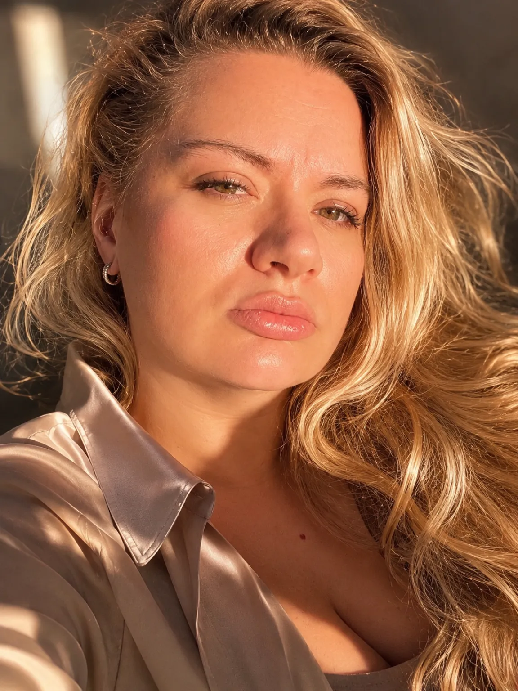

UNDERSTAND
Begin with the real task
Look at the audience, the current work and the part that is getting stuck.
ABOUT YOURBLOOM
I’m Maria, the person behind YourBloom. I work personally with bloggers and creators on content, audience direction and the business side of brand collaborations.
HI, I’M MARIA

I’m building YourBloom into an international creator and talent management agency. Today you work directly with me. I help creators shape a content strategy and handle brand conversations. For brands, I research creators against a specific campaign brief.
If content is the bottleneck, we can work on positioning, series, scripts and visual assets. If commercial work needs attention, we can prepare your media kit, research suitable brands and work through an enquiry, pitch or negotiation.
I’m based in Panama and work online. You communicate directly with me. We agree the task, fee, timing and approvals in writing, including how confidential materials will be shared. A focused first project can help us see what support is useful before expanding the work.
HOW I WORK
UNDERSTAND
Look at the audience, the current work and the part that is getting stuck.
DEFINE
Set the deliverables, fee, timing, access and approvals in writing.
REVIEW
Use the actual work and response to decide what to repeat, improve or hand over.
YOUR NEXT USEFUL STEP
Share your profile, your goal and the part you would like help with. I’ll review the context and suggest a defined next step.